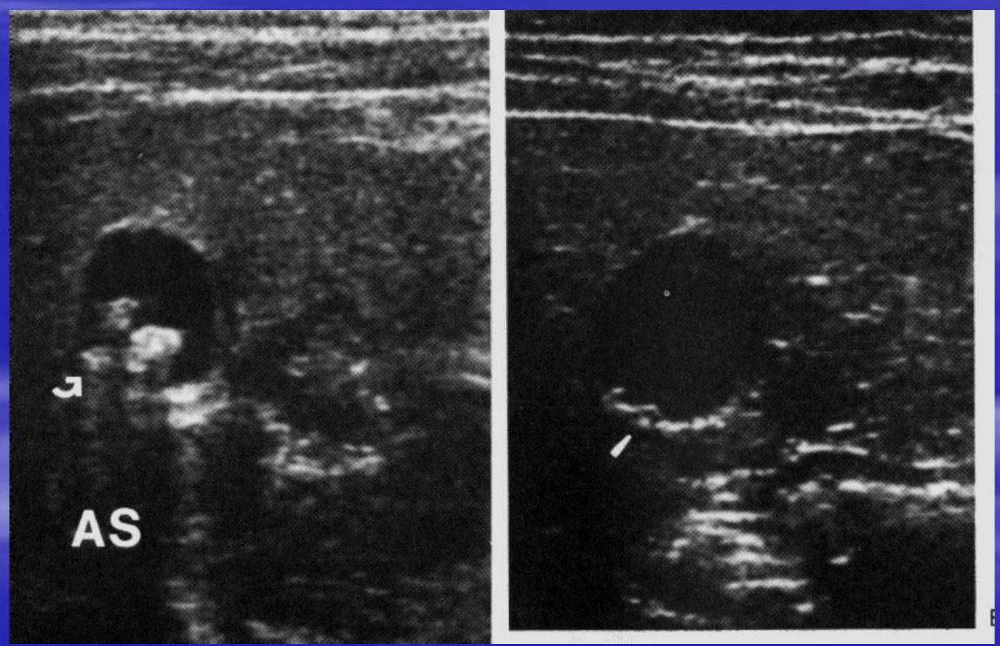
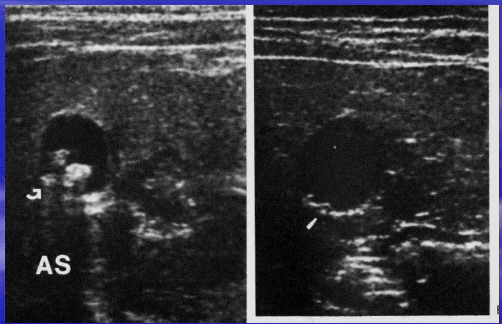

Imaging of The GIT
Dr. Angeline. A. Aywak
Introduction
- The discovery of X-rays made radiological procedures play a leading role in the visualization of anatomy and diseases of the gastrointestinal system.
- Later the advent of fibre optic endoscopic examination has changed the role of imaging of GIT pathology.
- Even so Imaging still has a vital role in management of gastrointestinal conditions.

Why Image?
- Imaging is needed to make or confirm a diagnosis and show disease extend.
- Help to plan treatment
- To follow up disease response after treatment.
Imaging Modalities
Listed below are current gastrointestinal imaging modalities
- Plain X-rays
- Ultrasound
- Contrast studies
- Computerized Tomography
- Radionuclide Scanning
- Magnetic Resonance Imaging
- Angiography
A. Plain X-RAY Films
- With plain X-rays the gastrointestinal organs cannot be separately visualized, however the normal or pathological gas accumulations, air fluid levels, calcification and motility of gas containing intestine can be seen.
Plain Films Indications
-
Suspected obstructive conditions
- Congenital e.g. TOF, Pyloric stenosis, duodenal atresia.
- Acquired e.g. intussusception, strangulated hernia.
B. Ultrasound Examination.
- In the hollow organs an increased wall thickness, increased degree of fluid content, pathological motility and status of surrounding environment (organs, peritoneal space) can be clearly visualized by ultrasound.
- All solid orgarns and the peritoneal cavity can be assessed by ultrasound.
Indications for Ultrasound
- Suspected masses
- Suspected peritoneal fluid collections
- Suspected calculus
- Suspected inflammatory conditions like appendicitis
- Suspected intusussception
- The jaundiced patient
Endosonography
- With this method the internal lumens of the oesophagus, stomach, duodenum, rectum and their surroundings can be examined.
- Wall structure, pathological processes and their relationship with surrounding organs can be visualized.
 

Contrast Studies
Contrast material is introduced into the system. Ba sulphate, Air, Ionic water soluble as well as non-ionic water soluble contrast materials used.
- Choice of contrast depends on suspected pathology.
Single Contrast.
- The gastrointestinal lumen is filled with positive contrast material usually (Barium sulfate).
- This then makes easy visualization of pathological conditions such as stenosis, dilatations, intraluminal filling defects, organ contour deformity and external compression.
- The examination can also verify function of the system i.e. emptying and peristalsis.
Double Contrast Studies
This examination applies use of two contrast materials a positive one (Barium sulfate or gastrografin) and a negative one (usually air).
- The wall of the organ is relaxed by smooth muscle relaxant. Membrane is coated by contrast material and lumen distended with gas.
- This provides more information than single contrast examination as detailed visualization of gut mucosa is achieved, the method however does not afford a functional information.
Types of Contrast Studies
- Sialography
- Ba. Swallow
- Ba. Meal
- Ba. meal follow thru
- Small Bowel Enema
- Ba. Enema
- Colostrogram, Sinogram, Fistulogram
Siglography Study


BARIUM SWALLOW
Indications
- Dysphagia
- Pain on swallowing
- Assessment of tracheo-oesophageal fistula(where plain films not diagnostic)
- Pre-operative assessment of CA bronchus
- Assessment of left atrial enlargement
- Assessment of perforation (water soluble contras instead of barium.
- Follow up following oesophageal surgery.
NORMAL FINDINGS
- Physiological constrictions may be seen - cricopharyngeus muscle, aortic arch, left main bronchus, left atrium and gastroesophageal junction.
ABNORMAL FINDINGS
- Achalasia (seen on single contrast)
- Esophageal webs (seen on double contrast)
- Esophageal candidiasis (seen on double contrast)
- Multiple small ulcers will appear mottled
- Hiatal hernia (seen on double contrast)
- Know the types***
- Esophageal carcinoma (double contrast): irregular strictures
- Esphageal varices (double contrast): serpiginous contrast
BARIUM MEAL
Double contrast examination of choice in adults. Single contrast in children and ill
INDICATIONS
- dyspepsia
- weight loss.
- Follow up after surgery
- suspected gastrointestinal bleeding or unexplained-icon deficiency
- partial obstruction
CONTRAINDICATIONS
- Complete large bowel obstruction
- Suspected perforation (there is up to 50% mortality if barium leaks into the peritoneum).
- Investigation of choice in suspected perforation: plain radiography
CONT.
- Stomach ulcer on barium meal: barium meals pools within the crater of the ulcer with the mucosal folds radiating towards the crater
- Barium meal has some sensitivity in demonstrating stomach ulcers (not as high as endoscopy)
- Duodenal ulcer (pooling)
BARIUM MEAL FOLLOW THROUGH
Indications
- Pain
- Diarrhoea e.g. malabsorption syndromes
- Bleeding
- Partial obstruction
Contraindications
- As for Ba meal
CONT.
- Ascariasis: filling defects within the small bowel outlined by the barium
SMALL BOWEL ENEMA (ENTEROCLYSIS)
- Gives better visualization of small bowel than that achieved by barium meal follow through.
- However it has the disadvantage of being unpleasant to the patient due to intubation and time consuming to the radiologist.
Indication
- Same as for Barium meal follow through
BARIUM ENEMA
Examination of the large bowel.
It is currently getting replaced by CT colonography.
Two methods commonly used.
- Double contrast: This is examination of choice to demonstrate mucosal pattern.
- Single contrast: This is used in children since it is not usually necessary to demonstrate mucosal pattern It can also be used to reduce an intussusception
- Contrast introduced per rectal
- Change in bowel habits
- Unexplained abdominal pain
- Melena
- Onstruction e.g. intusussception
CONTRAINDICATIONS (HIGH RISK OF PERFORATION)
- Toxic megacolon
- Pseudomembranous colitis
- Rectal biopsy witfin previous 3 days
ABNORMAL FINDINGS
- Colon cancer (apple core deformity)
- Colonic polyp
- Ulcerative colitis
- Featureless colon
- Mottling

ULTRASOUND IN GIT IMAGING
Though of limited value in imaging the GIT, for the reason that gas produces poor sound penetration, it can be useful in the following areas
- Suspected masses
- Suspected peritoneal fluid collections
- Suspected calculus
- Suspected inflammatory conditions like appendieitis
- Suspected intusussception
- Suspected hernias
- The jaundiced patient
CONT.
- Esophageal cancer: hypoechoic areas
- Hypertrophic pyloric stenosis
- Intussusception
- Appendicitis
- Liver metastases from colonic cancer
- Gall bladder cancer
- CI scan volume rendering
- CI scan virtual endoscopy